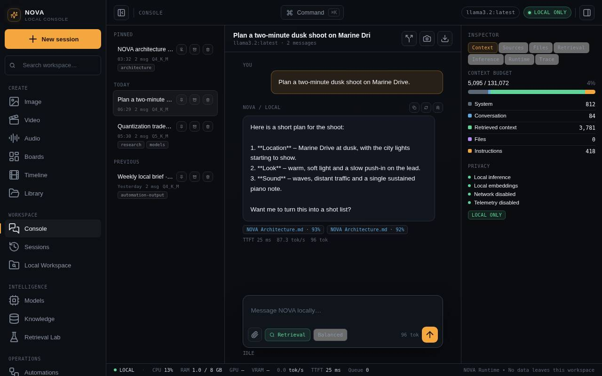

Welcome to NOVA
What NOVA is, how the screen is organised, and what stays on your computer.
NOVA Runtime is a workspace for local AI. You chat with models that run on your computer, search your own documents, make images, video and audio, run skills and tools, build agents and workflows, and change code in folders you approve. NOVA's server listens only on 127.0.0.1:8787, so nothing on your network can reach it.

How NOVA is organised
The sidebar groups every screen by what you do there:
| Group | Screens | What they are for |
|---|---|---|
| Create | Image, Video, Audio, Boards, Timeline, Library | Making media on this computer, arranging it and cutting it together |
| Workspace | Console, Sessions, Local Workspace | Chatting with models, and changing code in approved folders |
| Intelligence | Models, Knowledge, Retrieval Lab | The models you have, your documents, and testing search over them |
| Operations | Automations, Evaluations | Scheduled runs and model comparisons |
| Capabilities | Skills, MCP Registry, Agents, Workflows, Collector, Capability Graph, Provider Browser | What models may do, and the guard rails around it |
| System | Runtime, Trace, Git Updates, Execution History, Diagnostics, Settings, Help & Support | Seeing what happened and keeping NOVA healthy |
Read A tour of the interface for the top bar, the command palette and the status bar.
What stays on your computer
- Your conversations, documents, media, settings and history are stored in a local database and in ordinary files on this computer.
- Models run through Ollama on this computer. Image, video and audio models run in ComfyUI or local tools on this computer.
- NOVA uses the network only when you turn on Settings > Privacy > Allow network access, for example to install packages or let the browser tool open a web page. The pill in the top bar says LOCAL ONLY while that is off.
- Tools that can change things (files, git, the browser) ask for your approval, and agents and workflows follow the same rules.
Tip Some records in a new install are examples that show how a screen works (a few sessions, agents and workflows). A model synced from Ollama, an indexed document, a connected tool server and a finished run in Execution History are the signs that something is really working.
Where to go next
- Install and start NOVA
- First steps: check everything works, sync your models and send a first message
- Chat and sessions